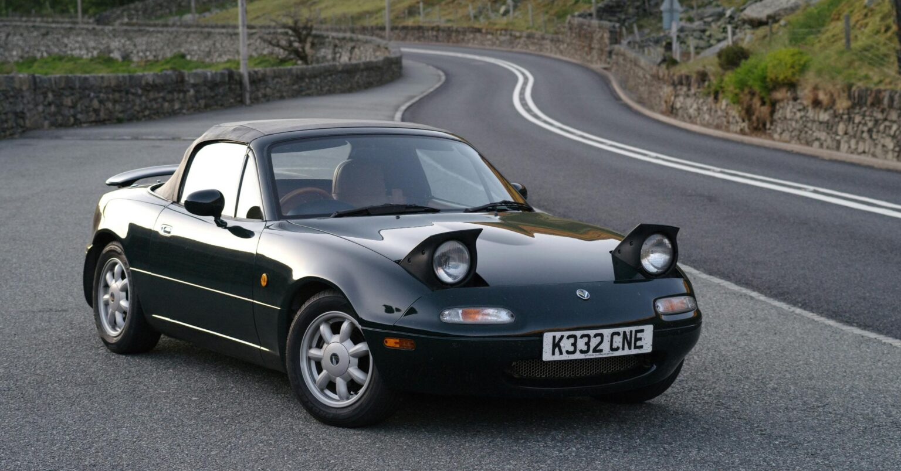

Quick Overview
About the Car
The Mazda MX-5 (Mk1), known in North America as the Mazda Miata, and released in Japan as the
Eunos Roadster, is a lightweight, convertible, two-seater, roadster-style sports car released in
1989 that was produced until 1997. Commonly referred to by it's internal model-code the "NA"
(later generations similarly, NB, NC, ND etc.) is a front-engined, rear-wheel drive (FR)
S-segment vehicle that has gone on to become the world's best selling sports car and won
multiple awards.
Owners cherish the first-generation model due to it's predicatble
handling & grip on the road, raw feeling with some models lacking modern amenities such as power
brakes, windows & steering, and simplistic build, with it being well-known as a good car for
beginner/hobbyist mechanics due to how easy they are to work on. And as well it's iconic 90s
look with classic pop-up style headlights. Below is a list of some of the engine specifications
(UK Models).
- 1990-1993 - 1.6L - 114hp @ 6500rpm
- 1994-1997 - 1.6L - 88hp @ 6500rpm
- 1994-1995 - 1.8L - 128hp @ 6500rpm
- 1996-1997 - 1.8L - 133hp @ 6500rpm
